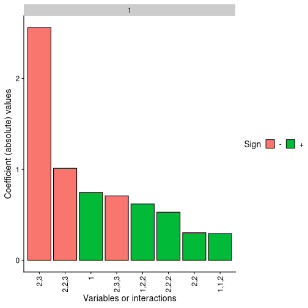

01 - Introduction to nn2poly
Pablo Morala
nn2poly-01-introduction.RmdOverall package goal
The main objective of nn2poly is to obtain a
representation of a feed forward artificial neural network (like a
multilayered perceptron) in terms of a polynomial representation. The
coefficients of such polynomials are obtained by applying first a Taylor
expansion at each activation function in the neural network. Then this
expansions and the given neural network weights are joint using
combinatorial properties, obtaining a final value for the polynomial
coefficients.
More information with the theoretical insights about the underlying mathematical process used to build this relationship can be found in the following references: * Initial development of the idea for a single hidden layer neural network in this article or its free access arXiv preprint version. * Extension to deeper layers and proper formulation of the NN2Poly method in this arXiv preprint.
Important remark 1: The approximations made by the NN2poly
method rely on Taylor expansions and therefore require some constraints
to be imposed when training the original neural network. The
implementation of these constraints depend on the deep learning
framework used to train the neural networks. Currently, this package
supports constraints implementation for keras/tensorflow,
covered in vignette("nn2poly-02-tensorflow-regression") and
vignette("nn2poly-03-tensorflow-classification").
Implementation for pytorch networks is in development. However,
the nn2poly can work by default with any kind of neural
network by manually feeding the neural network weights and activation
functions to the algorithm. Therefore, nn2poly is not
limited to a special deep learning framework.
This vignette’s goal
Here we present the basic behavior of nn2poly when used
in its default version, without specifying any deep learning framework
as explained in the previous remark. For that matter, we will showcase
an example where we will get the weights from a trained neural network
and manually create the object with the needed information to use
nn2poly.
The result will be a polynomial that tries to approximate the neural network behavior. In this case the neural network training will not have any constraint imposed. Then, as explained previously, the final approximation by the polynomial may not be accurate enough.
This example is focused in the default version, but we need to build
a NN under some framework, we will use keras and
tensorflow for that matter. In any case, the needed
parameters will be extracted and used under the default version of
nn2poly, so this can be extrapolated to any other
framework.
library(nn2poly)
library(keras)
# This sets all needed seeds
tensorflow::set_random_seed(42)Simple regression example
This example will solve a regression problem using simulated data
from a polynomial, which allows to control if the final polynomial
coefficients obtained with nn2poly are similar to those
from the polynomial that originates the data.
Simulated data generation
We will simulate polynomial data as follows. First we define a
polynomial using the format needed in nn2poly, specifically
to use the function eval_poly, which consists of a list
containing: * Labels: A list of integer vectors denoting the
combinations of variables that appear on each term of the polynomial.
Variables are numbered from 1 to p where
p is the dimension of the problem. As an example,
c(1,1,3) would represent the term \(x_1^2x_3\) * Values: Vector containing the
numerical values of the coefficients denoted by labels. If multiple
polynomials with the same terms but different coefficients want to be
represented, a matrix can be employed, where each row is a
polynomial.
Here we create the polynomial \(4x_1 - 3 x_2x_3\):
With said polynomial, we can now generate the desired data that will train the NN for our example. We will employ a normal distribution to generate variables \(x_1, x_2, x_3\) and also an error term \(\epsilon\). Therefore, the response variable \(y\) will be generated as: \(y = 4x_1 - 3 x_2x_3 + \epsilon\)
# Define number of variables p and sample n
p <- 3
n_sample <- 500
# Predictor variables
X <- matrix(0,n_sample,p)
for (i in 1:p){
X[,i] <- rnorm(n = n_sample,0,1)
}
# Response variable + small error term
Y <- as.vector(eval_poly(X,polynomial)) + stats::rnorm(n_sample, 0, 0.1)
# Store all as a data frame
data <- as.data.frame(cbind(X, Y))
head(data)
#> V1 V2 V3 Y
#> 1 1.3709584 1.029140719 2.3250585 -1.7547416
#> 2 -0.5646982 0.914774868 0.5241222 -3.7107357
#> 3 0.3631284 -0.002456267 0.9707334 1.3609395
#> 4 0.6328626 0.136009552 0.3769734 2.4608270
#> 5 0.4042683 -0.720153545 -0.9959334 -0.6141076
#> 6 -0.1061245 -0.198124330 -0.5974829 -0.7455793Then we will scale the data to have everything in the \([-1,1]\) interval and divide it in train and test datasets.
# Data scaling
maxs <- apply(data, 2, max)
mins <- apply(data, 2, min)
data <- as.data.frame(scale(data, center = mins + (maxs - mins) / 2, scale = (maxs - mins) / 2))
# Divide in train (0.75) and test (0.25)
index <- sample(1:nrow(data), round(0.75 * nrow(data)))
train <- data[index, ]
test <- data[-index, ]
train_x <- as.matrix(train[,-(p+1)])
train_y <- as.matrix(train[,(p+1)])
test_x <- as.matrix(test[,-(p+1)])
test_y <- as.matrix(test[,(p+1)])Original neural network
With our simulated data ready, we can train our neural network. The
method is expected to be applied to a given trained densely connected
feed forward neural network (NN from now on), also referred as
multilayer perceptron (MLP). Therefore, as explained before, the method
used to train the NN can be used. Here we will use kerasto
train it, but we will manually build the needed object with the weights
that has to be fed to the nn2poly algorithm as if
it was trained with any other framework. For more information
on the specific keras methods implemented in the package,
please refer to
vignette("nn2poly-02-tensorflow-regression") and
vignette("nn2poly-02-tensorflow-classification").
Note: Once again, note that, in order to avoid asymptotic behavior of the method, it is important to impose some kind of constraints when training the neural network weights. Details on how to do this depend on the chosen deep learning framework and are covered in the next vignettes.
First, we build the model.
nn <- keras_model_sequential()
nn %>% layer_dense(units = 10,
activation = "tanh",
input_shape = p)
nn %>% layer_dense(units = 10,
activation = "tanh")
nn %>% layer_dense(units = 1,
activation = "linear")
nn
#> Model: "sequential_15"
#> ________________________________________________________________________________
#> Layer (type) Output Shape Param #
#> ================================================================================
#> dense_18 (Dense) (None, 10) 40
#> dense_19 (Dense) (None, 10) 110
#> dense_20 (Dense) (None, 1) 11
#> ================================================================================
#> Total params: 161
#> Trainable params: 161
#> Non-trainable params: 0
#> ________________________________________________________________________________Compile the model:
compile(nn,
loss = "mse",
optimizer = optimizer_adam(),
metrics = "mse")And train it:
history <- fit(nn,
train_x,
train_y,
verbose = 0,
epochs = 300,
validation_split = 0.3
)We can visualize the training process:
plot(history)
And we can also visualize the NN predictions vs the original Y values.
# Obtain the predicted values with the NN to compare them
prediction_NN <- predict(nn, test_x)
# Diagonal plot implemented in the package to quickly visualize and compare predictions
plot_diagonal(x_axis = prediction_NN, y_axis = test_y, xlab = "NN prediction", ylab = "Original Y")
Note: Recall that the NN performance is not addressed by
nn2poly, meaning that this performance could be either good
or bad and nn2poly still represent the NN behavior.
Using nn2poly to obtain the polynomial
After the NN has been trained, using any chosen method by the user,
the parameters have to be extracted and reshaped, if needed, to match
the expected input of the function nn2poly_algorithm().
This input should be an object formed by a list of
matrices with a weight matrix at each layer. The weights matrices should
be of dimension ((1+input) * output) where the first row corresponds to
the bias vector, and the rest of the rows correspond to each of the
ordered vector weights associated to each input.
In that list, the name of each element has to be the activation
function names of each layer. Currently supported activation functions
are "tanh", "sigmoid", "softplus", "linear".
Particularly, the keras framework by default separates
kernel weights matrices of dimension (input * output) and bias vectors
(1 * output), so we need to add the bias as the first row of a matrix
((1+input) * output).
keras_weights <- keras::get_weights(nn)
# Due to keras giving weights separated from the bias, we have twice the
# elements that we want:
n <- length(keras_weights)/2
nn_weights <- vector(mode = "list", length = n)
for (i in 1:n){
nn_weights[[i]] <- rbind(keras_weights[[2*i]], keras_weights[[2*i-1]])
}
# The activation functions stored as strings:
af_string_names <- c("tanh","tanh", "linear")
weights_object <- nn_weights
names(weights_object) <- af_string_names
weights_object
#> $tanh
#> [,1] [,2] [,3] [,4] [,5] [,6]
#> [1,] 0.2637966 -0.1632335 0.4649245 -0.20589803 0.04730094 -0.3763387
#> [2,] 0.2385524 0.1342811 0.2513933 0.48018309 -0.47788176 0.1631715
#> [3,] -0.7742428 -0.1097567 0.8174284 0.08418242 0.06163564 0.7477616
#> [4,] -0.6955228 0.5266028 0.5572206 -0.46307948 0.48515409 -0.7743985
#> [,7] [,8] [,9] [,10]
#> [1,] -0.2124885 -0.08747434 -0.07051360 -0.37202930
#> [2,] 0.6607828 -0.31218216 -0.01426336 -0.01626668
#> [3,] -0.8533844 -0.48116657 0.04514860 -0.70131820
#> [4,] 0.1162070 0.35274017 0.04112899 -0.56946415
#>
#> $tanh
#> [,1] [,2] [,3] [,4] [,5] [,6]
#> [1,] -0.06261473 0.01255261 0.42954829 0.06141516 0.08550595 0.2265693
#> [2,] 0.61023968 -0.15460493 0.32420215 0.16633785 0.25600886 -0.2739864
#> [3,] -0.25070983 -0.05766810 -0.50344008 0.13009298 -0.03173310 -0.4047118
#> [4,] 0.40872586 0.46675542 0.11527456 0.43078154 0.15864335 0.6346628
#> [5,] -0.24814591 0.01059229 0.40011716 0.27607894 -0.46360433 -0.3692199
#> [6,] -0.26658243 0.51526904 -0.09131107 0.37373766 0.26082405 0.4299564
#> [7,] 0.51186675 0.12881947 0.67951459 -0.17605777 0.15393135 0.4613117
#> [8,] 0.40394908 -0.42659599 -0.98550946 -0.15839998 0.02221864 0.3011585
#> [9,] 0.50324774 0.11122702 -0.84318024 -0.02784178 0.31848624 0.2643846
#> [10,] 0.27406499 -0.11159007 0.02285146 0.35646623 0.25075704 -0.1359648
#> [11,] -0.52268207 0.45537508 -0.56030786 0.49129054 -0.03669148 -0.7891714
#> [,7] [,8] [,9] [,10]
#> [1,] 0.08071607 0.16983804 0.08445328 0.0732324421
#> [2,] 0.06122208 -0.04379337 -0.57018125 -0.3144004941
#> [3,] 0.28472036 0.23372132 -0.47447795 0.0003889628
#> [4,] 0.01778316 -0.29318872 0.07777876 -0.0302867368
#> [5,] -0.53746992 -0.42425549 -0.48620722 -0.1922566146
#> [6,] -0.41601449 -0.25669649 -0.28299403 -0.2540818155
#> [7,] -0.22281407 0.40243641 -0.12623918 -0.4014825821
#> [8,] -0.04859665 -0.38288346 0.25072047 -0.3935797811
#> [9,] 0.48137835 -0.40863025 0.01616014 -0.5411312580
#> [10,] -0.32286894 0.09449039 -0.06011314 -0.4011713266
#> [11,] 0.14410253 -0.21469988 0.24569559 0.3822859824
#>
#> $linear
#> [,1]
#> [1,] -0.07251097
#> [2,] 0.95829737
#> [3,] -0.07316440
#> [4,] -0.35980642
#> [5,] -0.43944517
#> [6,] -0.07012334
#> [7,] 0.60509491
#> [8,] -0.66404337
#> [9,] -0.04713812
#> [10,] -0.79189116
#> [11,] -0.91330308Additionally, there are other parameters affecting properties of the algorithm:
-
q_taylor_vector: A vector of integers containing the order of the Taylor expansion performed at each layer. If the output layer has a linear activation function, then the last value should be 1.
q_taylor_vector <- c(8, 8, 1)-
forced_max_Q: (optional value) An integer value denoting the maximum order of the terms computed in the polynomial. Usually 2 or 3 should be enough in practice. Note that higher orders suppose an explosion in the possible combinations. If the user does not provide a value, the polynomial order grows multiplicatively with the Taylor order at each hidden layer, therefore its better to start with low values.
When the input is in the desired shape, the nn2poly method can be applied:
final_poly <- nn2poly(object = weights_object,
q_taylor_vector = q_taylor_vector,
forced_max_Q = 3)We can have a glimpse at how the coefficients of the polynomial are stored. Note that the structure is the same as explained for the polynomial that generated the data, as a list with labels and values. In this case, the obtained polynomial is up to order 3.
final_poly
#> $labels
#> $labels[[1]]
#> [1] 0
#>
#> $labels[[2]]
#> [1] 1
#>
#> $labels[[3]]
#> [1] 2
#>
#> $labels[[4]]
#> [1] 3
#>
#> $labels[[5]]
#> [1] 1 1
#>
#> $labels[[6]]
#> [1] 1 2
#>
#> $labels[[7]]
#> [1] 1 3
#>
#> $labels[[8]]
#> [1] 2 2
#>
#> $labels[[9]]
#> [1] 2 3
#>
#> $labels[[10]]
#> [1] 3 3
#>
#> $labels[[11]]
#> [1] 1 1 1
#>
#> $labels[[12]]
#> [1] 1 1 2
#>
#> $labels[[13]]
#> [1] 1 1 3
#>
#> $labels[[14]]
#> [1] 1 2 2
#>
#> $labels[[15]]
#> [1] 1 2 3
#>
#> $labels[[16]]
#> [1] 1 3 3
#>
#> $labels[[17]]
#> [1] 2 2 2
#>
#> $labels[[18]]
#> [1] 2 2 3
#>
#> $labels[[19]]
#> [1] 2 3 3
#>
#> $labels[[20]]
#> [1] 3 3 3
#>
#>
#> $values
#> [,1] [,2] [,3] [,4] [,5] [,6]
#> [1,] -0.1617715 0.7475098 0.09908831 -0.08050417 0.07277049 0.03545956
#> [,7] [,8] [,9] [,10] [,11] [,12]
#> [1,] 0.009334022 0.3035036 -2.559723 0.02124509 -0.08924709 0.2939184
#> [,13] [,14] [,15] [,16] [,17] [,18] [,19]
#> [1,] 0.01080101 0.6197476 -0.04956815 0.07802355 0.5294107 -1.012448 -0.7079898
#> [,20]
#> [1,] -0.05140071
#>
#> attr(,"class")
#> [1] "nn2poly"Note that the output has the nn2poly class.
Obtaining polynomial predictions
After obtaining the polynomial coefficients, we can use them to
predict the response variable \(Y\).
This is done by employing function predciton an
nn2poly object and providing the new data to predict.
# Obtain the predicted values for the test data with our polynomial
prediction_poly <- predict(object = final_poly,
newdata = test_x)Visualizing the results
It is advisable to always check that the predictions obtained with the new polynomial do not differ too much from the original neural network predictions (and in case they differ, we can also try to find why by checking the Taylor expansions). To help with that, a couple of functions are included that allow us to plot the results.
A simple plot comparing the polynomial and NN predictions can be
obtained with plot_diagonal(), where the red diagonal line
represents where a perfect relationship between the NN and the
polynomial predictions would be obtained. In this example, as the
theoretical weights constraints have not been imposed, we can observe
how the approximation is not perfect.
plot_diagonal(x_axis = prediction_NN, y_axis = prediction_poly, xlab = "NN prediction", ylab = "Polynomial prediction")
We can also plot the \(n\) most important coefficients in absolute value to compare which variables or interactions are more relevant in the polynomial. Note that, as data should be scaled to the \([-1,1]\) interval, interactions of order 2 or higher would usually need a higher absolute value than the lower order coefficients to be more relevant.
In this case we can see how the coefficients differ from the original polynomial \(4x_1 - 3 x_2x_3\), as there were no constraints on the neural network weights training.
plot_n_important_coeffs(final_poly, 8)
Another convenient plot to show how the algorithm is affected by each
layer can be obtained with
plot_taylor_and_activation_potentials(), where the
activation potentials at each neuron are computed and presented over the
Taylor expansion approximation of the activation function at each
layer.
In this case, as we have not used constraints in the NN training, the activation potentials are not strictly centered around zero.
plot_taylor_and_activation_potentials(object = nn,
data = train,
q_taylor_vector = q_taylor_vector,
forced_max_Q = 3,
my_max_norm = list("unconstrained",1))
#> [[1]]
#>
#> [[2]]
#>
#> [[3]]